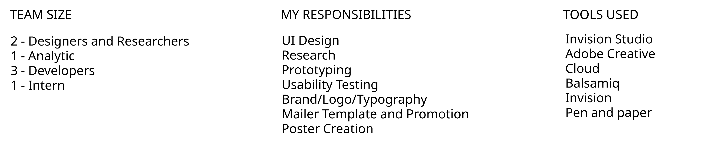
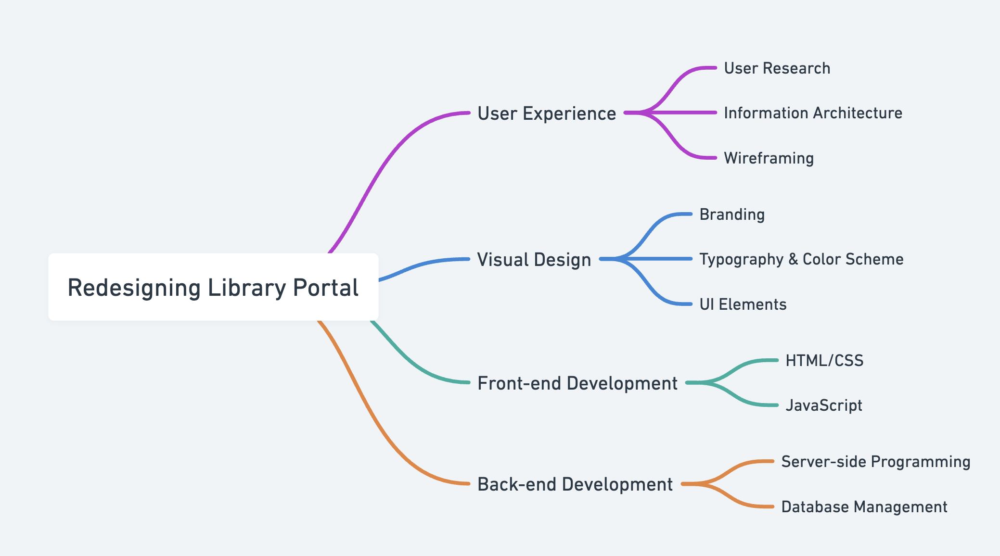
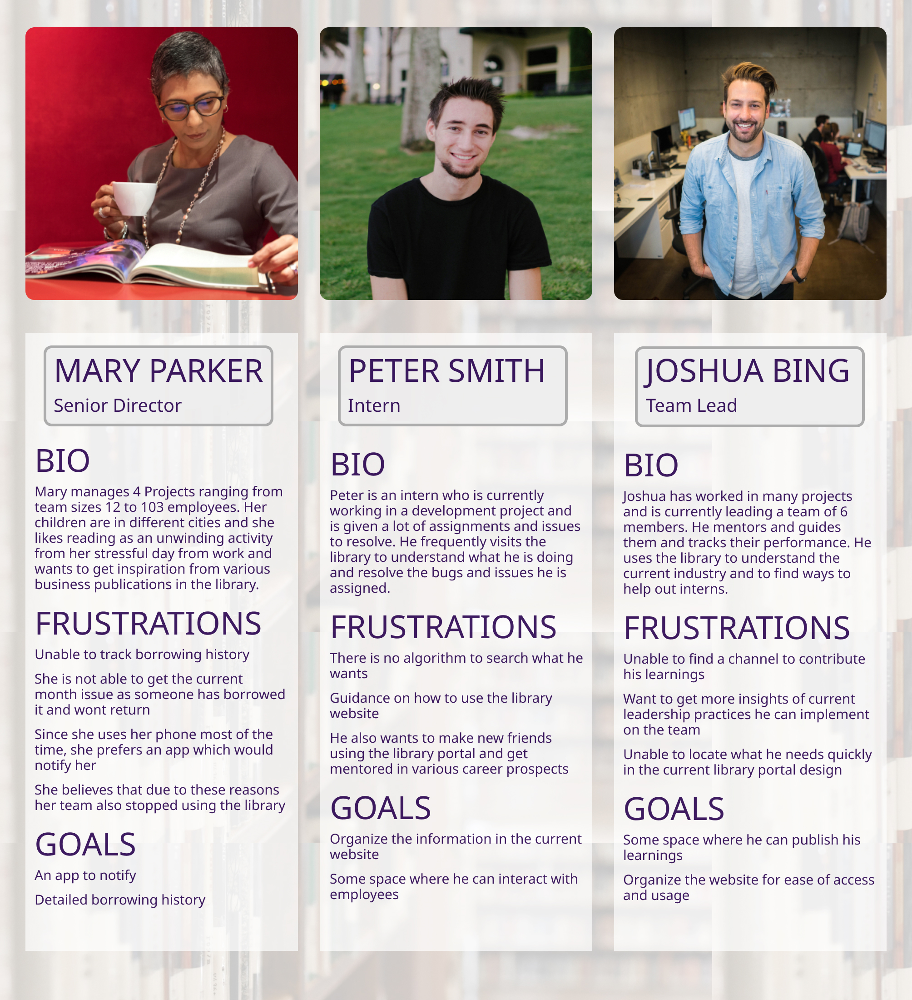
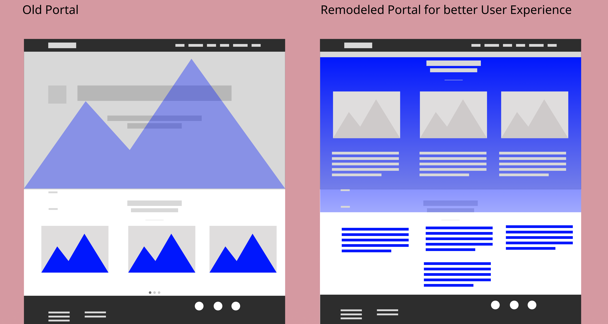

The Accenture Library is a treasure trove of knowledge designed to empower employees with resources to enhance their skill sets, expand their vocabulary, deepen their knowledge, or simply unwind with a good read. With a wealth of online resources available 24/7 to all active employees, the library serves as an invaluable tool for professional and personal growth.
However, many employees were unaware of this rich resource within the organization. To address this challenge, we embarked on a journey to increase awareness and accessibility by reimagining the library portal. This redesign includes a more intuitive web portal and the creation of a mobile app featuring frequently accessed URLs, ensuring employees can seamlessly engage with library resources anytime, anywhere.
How might we redesign the library portal to provide a better user experience and increase awareness and engagement among employees?
Empathize
Understanding the User’s World
Define
Crafting the Problem Statement
- Designed posters aligned with the company's branding to be displayed in prominent employee gathering areas.
- Created a newsletter template, which was shared with the project manager for distribution through the employee mailing list.
- Designed contest circulars to promote library events and engage employees.
The posters were strategically placed across the company, ensuring maximum visibility. I designed and implemented a recurring newsletter campaign, branded as "Motivational Mondays," which was shared weekly to boost awareness. Additionally, engaging contests like crosswords were conducted through emails. These efforts successfully increased awareness of the library's resources, and the portal began receiving significantly higher usage. Employees also started actively visiting the library, marking a major milestone in the initiative.
Creating Personas
Translating Insights into Action
Stakeholder Meeting
To bridge the gap between research and execution, we collaborated with key stakeholders responsible for the library portal’s development. The core objective was to enhance employee awareness and maximize the utilization of the library’s resources.
User Interviews
We conducted in-depth interviews with employees who visited the library, selecting six participants with diverse professional backgrounds and reading preferences. These insights helped us identify common pain points and opportunities for improvement.
Personas
Based on our findings, I developed three user personas—Mary, Peter, and Joshua—each representing different work experiences, reading habits, and motivations for using the library. These personas guided our design decisions by keeping real user needs in focus.
03 Ideate
Exploring Design Possibilities
We brainstormed multiple ideas and layouts, focusing on minimal yet effective changes to enhance usability. My goal was to retain the essence of the existing portal while improving accessibility and user experience. I began with low-fidelity sketches to map out potential solutions.
04 Prototype
Bringing Ideas to Life
Since we were redesigning an existing portal, I chose to maintain the current typography, color palette, and branding while introducing complementary fonts and colors to improve interaction.
Addressing Key Pain Points
Navigation Issues
The website had a complex and inconsistent navigation structure, making it difficult for employees to locate resources efficiently. Simplifying the site map and restructuring the information architecture became a top priority.

After refining the sketches, I collaborated with developers to discuss feasibility, coding constraints, and timelines. We opted to reuse existing components wherever possible to ensure a seamless transition.
Once the foundational changes were set, I created an interactive prototype for usability testing. I used InVision Studio for rapid collaboration and iteration.
Analytics indicated that the *borrowing feature* was the most frequently used, aligning with our user personas' needs. Based on this insight, I designed a basic mobile app concept focused on borrowing books, tracking due dates, and receiving availability notifications.
Due to a Non-Disclosure Agreement (NDA), detailed wireframes cannot be shared, but this case study outlines the methodologies used to solve the design challenges.
05 Test
Validating the Design
Before final implementation, we conducted usability tests to uncover potential issues and assess user satisfaction. A/B testing was conducted with 12 employees to compare the original and redesigned portal.
- Participants were asked to navigate both versions and provide feedback.
- The goal was to test clarity, ease of use, and overall experience.
- Key performance indicators (KPIs) were broken into measurable tasks.
- Employees provided valuable feedback, including further improvement suggestions.
How our personas responded to the changes:
Mary: "I get notifications and can easily track the books I need!"
Peter: "Navigation is much clearer now, and everything is accessible."
Joshua: "I can share my experiences in the blog section and guide interns outside my team."
06 Reflection
Key Takeaways & Learnings
- End-to-end involvement in this project provided exposure to all aspects of the UX process.
- Even small, well-planned design changes can significantly enhance usability and engagement.
- Conducting user research and usability testing reinforced the importance of direct user feedback.
- This project refined my design thinking approach, deepening my empathy for users.